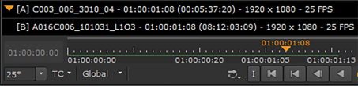
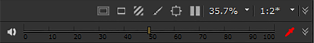
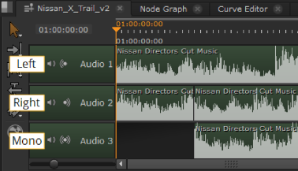
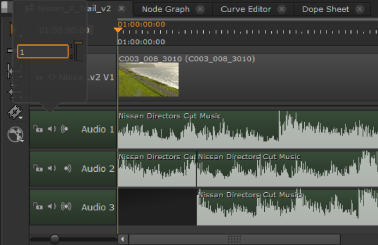

Audio tracks on the timeline are handled in much the same way as video tracks. By default, linked audio and video tracks are edited at the same time, but you can lock either track and move them independently or hold Alt to select a single track, if required.
NOTE: Although you can import and edit multi-channel audio, during playback audio is mixed to 48 KHz stereo output.
NOTE: Nuke Studio does not currently support any QuickTime audio on Linux. Support for audio on Linux is scheduled for a later release.
When both Viewer inputs contain clips, the audio output is set by the orange marker in the color picker information bar, displayed by clicking  . In the following example, input A is providing the audio output:
. In the following example, input A is providing the audio output:

The volume slider in the upper-right corner of the Viewer controls the output level for that Viewer only.

Audio output for clip instances can be toggled between left, right, and mono using the audio toggles in the track header. Click on the icon to cycle between outputs:

You can also control audio on a per track and per clip instance basis. Audio track headers and clip instances have independent volume controls in the timeline and Properties tab.
• Track headers - click and hold the mute icon on the header to display the volume slider.

• Clip Instances - select an audio clip instance and click on the Properties tab to display the Volume control.
TIP: You can control the volume on multiple clip instances simultaneously by holding Ctrl/Cmd and selecting the required items before adjusting the volume slider.
The Preferences > Panels > Viewer (Sequence) sub-menu contains audio controls allowing you to control the volume level for all new Viewers. See Appendix A: Preferences for more information.
NOTE: If the frame rate drops too low, audio is automatically muted and the speaker changes to the no audio playback icon.
|
|